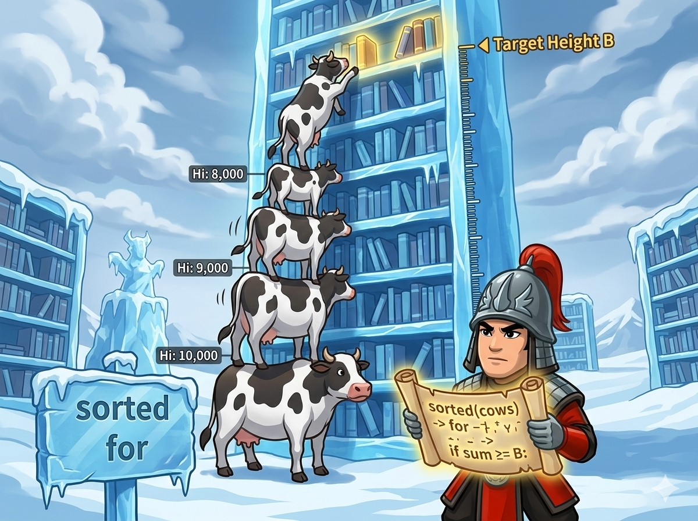

有 N 头奶牛，每头奶牛都有自己的身高。为了把书放到高度为 B 的书架上，她们要像搭积木一样往上叠。

⚠️ 安全第一： 叠的奶牛越多，塔就越晃！所以只要总高度达到或超过书架高度 B，就立刻停止。
你的任务： 算出最少需要几头奶牛才能拿到书！
如果想用最少的奶牛达到书架高度，我们要怎么办呢？
💡 贪心法则： 每次都挑个子最高的那头奶牛去叠罗汉！大个子顶好几个小个子，这样用掉的牛一定是数量最少的！这就是著名的“贪心算法”。
greater<int>()： 以前我们用 sort() 默认是从小到大。加上这个超级配件，精灵就会把数字从大到小排好啦！（记得包含 #include <functional> 工具箱）。long long： 奶牛的总高度 B 可能高达二十亿 (2,000,000,007)。如果很多头奶牛加在一起，普通的 int 可能会撑爆！用 long long 存总和最安全。#include <iostream> #include <vector> #include <algorithm> #include <functional> // 🪄 为了使用 greater 咒语，必须带上这个！ using namespace std; int main() { // ⚡ 加速咒语，快速读入 ios::sync_with_stdio(false); cin.tie(nullptr); int N, B; cin >> N >> B; // 🖥️ 电脑问：有几头牛？书架有多高？ vector<int> h(N); for (int i = 0; i < N; ++i) { cin >> h[i]; // 记录每一头牛的身高 } // 🪄 降序魔法：把奶牛的身高从大到小 (高到矮) 排序！ sort(h.begin(), h.end(), greater<int>()); long long sum = 0; // 📏 记录目前叠起来的总高度 (用 long long 防爆) int cnt = 0; // 🐄 记录用到了几头奶牛 // 🪜 开始叠罗汉！从最高的那头开始！ for (int i = 0; i < N; ++i) { sum += h[i]; // 加上这头牛的身高 ++cnt; // 使用的奶牛数量 + 1 // 💡 检查一下：够不够高了？ if (sum >= B) { break; // 够高了！马上停下来，后面的牛不用上啦！ } } // 🎉 大声宣布答案！ cout << cnt << '\n'; return 0; }
break： 叠罗汉只要超过了书架高度 B 就立刻成功了。如果不写 break，哪怕够高了也会把所有牛都叠上去，塔可就塌啦！